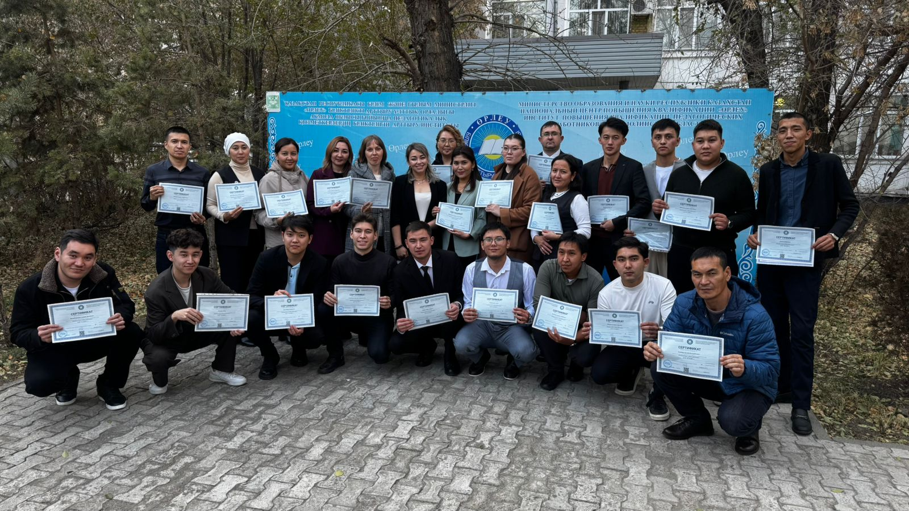

Обо мне Мен туралы

Меня зовут Түлкібай Әліби Абайұлы. Менің атым Түлкібай Әліби Абайұлы.
Гражданство: Республика Казахстан Азаматтығы: Қазақстан Республикасы
Образование: Высшее (Магистр) Білімі: Жоғары (Магистр)
Дата рождения: 27.03.1996 г. Туған күні: 27.03.1996 ж.
Пол: Мужской Жынысы: Ер
Водительское удостоверение: категория B Жүргізуші куәлігі: B санаты
Языки: казахский (родной), русский (свободно) Тілдері: қазақ тілі (ана тілі), орыс тілі (еркін)
Служба в армии: ВЧ 2177, г. Алматы №1500548, ДП Акмолинская область Әскери қызмет: 2177 әскери бөлімі, Алматы қ., №1500548, Ақмола облысы ДП
Я — IT-специалист, STEM-тренер и проектный менеджер с опытом реализации образовательных и IT-проектов. Специализируюсь на внедрении современных технологий в образование, оснащении учебных кабинетов, обучении преподавателей и сопровождении проектов от идеи до ввода в эксплуатацию. Мен білім беру және IT жобаларын іске асыру тәжірибесі бар IT маманы, STEM тренері және жоба менеджерімін. Білім беру саласына заманауи технологияларды енгізу, оқу кабинеттерін жабдықтау, педагогтарды оқыту және жобаларды жоспарлаудан бастап пайдалануға беруге дейін толық сүйемелдеумен айналысамын.
За свою карьеру обучил более 1000 педагогов, реализовал проекты по оснащению 24 «Комфортных школ», организовывал STEM-олимпиады и успешно завершил более 10 крупных проектов, включая проект стоимостью свыше 1 миллиарда тенге. Еңбек жолымда 1000-нан астам педагогты оқыттым, 24 «Жайлы мектепті» жабдықтау жобасын іске асырдым, STEM олимпиадаларын ұйымдастырдым және құны 1 миллиард теңгеден асатын жобаны қоса алғанда 10-нан астам ірі жобаны сәтті аяқтадым.
Сочетаю техническую экспертизу, управленческие навыки и практический опыт, помогая создавать современные образовательные пространства и эффективно внедрять инновационные решения. Техникалық білімді, басқарушылық қабілетті және практикалық тәжірибені үйлестіре отырып, заманауи білім беру кеңістіктерін құруға және инновациялық шешімдерді тиімді енгізуге үлес қосамын.
Образование Білімі
🎓 Среднее специальное 🎓 Арнаулы орта білім
Высший технический колледж г. Щучинск
2011–2014
№0454586
Щучинск қаласының Жоғары техникалық колледжі
2011–2014 жж.
№0454586
Степень: Біліктілігі:
Радиоэлектроника и связь Радиоэлектроника және байланыс🎓 Бакалавриат 🎓 Бакалавриат
Университет путей и сообщения
2014–2017
№1026977
Қатынас жолдары университеті
2014–2017 жж.
№1026977
Степень: Дәрежесі:
Бакалавр техники и технологий Техника және технологиялар бакалавры🎓 Магистратура 🎓 Магистратура
Университет путей и сообщения, г. Алматы
2017–2019
№0118306
Алматы қаласы Қатынас жолдары университеті
2017–2019 жж.
№0118306
Степень: Дәрежесі:
Магистр техники и технологий Техника және технологиялар магистрі📚 Дополнительное обучение 📚 Қосымша білім
• Учитель информатики (переквалификация), Университет им. Ш. Уалиханова, 2021
• Повар 3 разряда, КИТИС, 2018 №0531995
• АО НЦПК «Өрлеу», г. Кокшетау — Учитель робототехники, 2022 г.
• Информатика пәнінің мұғалімі (қайта даярлау), Ш. Уәлиханов атындағы университет, 2021 ж.
• 3-разрядты аспаз, КИТИС, 2018 ж. №0531995
• «Өрлеу» Ұлттық біліктілікті арттыру орталығы АҚ, Көкшетау қ. — Робототехника мұғалімі, 2022 ж.
Опыт работы Жұмыс тәжірибесі
Преподаватель специальных дисциплин Арнайы пәндер оқытушысы
Высший технический колледж, г. Щучинск Щучинск қаласының Жоғары техникалық колледжі
09.2016 – 12.2019
Проводил теоретические и практические занятия по специальностям «Радиотехника и электроника», формируя у студентов профессиональные навыки работы с электронными устройствами, современным оборудованием и программным обеспечением. «Радиотехника және электроника» мамандығы бойынша теориялық және тәжірибелік сабақтар өткізіп, студенттердің электрондық құрылғылармен, заманауи жабдықтармен және бағдарламалық қамтамасыз етумен жұмыс істеу кәсіби дағдыларын қалыптастырдым.
📋 Основные обязанности 📋 Негізгі міндеттері
-
• Проведение практических занятий по радиотехнике, электронике и профильным специальным дисциплинам. • Радиотехника, электроника және бейіндік арнайы пәндер бойынша тәжірибелік сабақтар өткізу.
• Обучение студентов основам программирования и развитию алгоритмического мышления. • Студенттерге бағдарламалау негіздерін үйрету және алгоритмдік ойлау қабілетін дамыту.
• Руководство учебной и производственной практикой студентов. • Студенттердің оқу және өндірістік тәжірибесіне жетекшілік ету.
• Контроль выполнения практических заданий и оценка уровня подготовки обучающихся. • Тәжірибелік тапсырмалардың орындалуын бақылау және білім алушылардың дайындық деңгейін бағалау.
• Подготовка учебно-методических материалов и практических работ. • Оқу-әдістемелік материалдар мен тәжірибелік жұмыстарды әзірлеу.
• Консультирование студентов по выполнению курсовых и практических проектов. • Курстық және тәжірибелік жобаларды орындау бойынша студенттерге кеңес беру.
• Формирование профессиональных компетенций в соответствии с требованиями образовательных стандартов. • Білім беру стандарттарының талаптарына сәйкес кәсіби құзыреттерді қалыптастыру.
Преподаватель программирования, робототехники и 3D-моделирования Бағдарламалау, робототехника және 3D модельдеу оқытушысы
IT BIL BURABAY 01.2021 – 08.2023
Проводил обучение школьников современным цифровым и инженерным технологиям, развивая практические навыки программирования, конструирования и проектной деятельности. Оқушыларды заманауи цифрлық және инженерлік технологияларға оқытып, бағдарламалау, құрастыру және жобалық қызмет бойынша тәжірибелік дағдыларын дамыттым.
📋 Основные обязанности 📋 Негізгі міндеттері
-
• Преподавание робототехники, программирования и 3D-моделирования. • Робототехника, бағдарламалау және 3D модельдеу пәндерін оқыту.
• Обучение работе с платформами Arduino, LEGO Mindstorms EV3 и языком программирования Python. • Arduino, LEGO Mindstorms EV3 платформаларымен және Python бағдарламалау тілімен жұмыс істеуді үйрету.
• Разработка учебных программ, практических заданий и проектных работ. • Оқу бағдарламаларын, тәжірибелік тапсырмалар мен жобалық жұмыстарды әзірлеу.
• Подготовка учащихся к участию в STEM-проектах, конкурсах и олимпиадах. • Оқушыларды STEM жобаларына, байқауларға және олимпиадаларға дайындау.
• Формирование инженерного, алгоритмического и проектного мышления. • Инженерлік, алгоритмдік және жобалық ойлау қабілетін қалыптастыру.
• Работа с современным STEM-оборудованием и технологиями цифрового производства. • Заманауи STEM жабдықтарымен және цифрлық өндіріс технологияларымен жұмыс істеу.
Тренер по робототехнике Робототехника бойынша тренер
АО «НЦПК «Өрлеу» 01.2021 – 08.2023 (по совместительству) «Өрлеу» БАҰО» АҚ 01.2021 – 08.2023 (қоса атқарушы)
Проводил курсы повышения квалификации для педагогов Акмолинской области по направлению «Робототехника», обучая использованию современных образовательных платформ и STEM-технологий. Ақмола облысының педагогтеріне «Робототехника» бағыты бойынша біліктілікті арттыру курстарын өткізіп, заманауи білім беру платформалары мен STEM технологияларын қолдануды үйреттім.
📋 Основные обязанности 📋 Негізгі міндеттері
-
• Проведение практических занятий и мастер-классов для учителей. • Педагогтерге арналған тәжірибелік сабақтар мен шеберлік сабақтарын өткізу.
• Обучение программированию и работе с платформами Arduino и Raspberry Pi 4. • Arduino және Raspberry Pi 4 платформаларымен жұмыс істеуді және бағдарламалауды үйрету.
• Разработка практических кейсов и учебно-методических материалов. • Тәжірибелік кейстер мен оқу-әдістемелік материалдарды әзірлеу.
• Консультирование педагогов по внедрению робототехники и программирования в образовательный процесс. • Робототехника мен бағдарламалауды білім беру үдерісіне енгізу бойынша педагогтерге кеңес беру.
• Демонстрация современных подходов к преподаванию STEM-дисциплин. • STEM пәндерін оқытудың заманауи тәсілдерін көрсету.
• Методическое сопровождение слушателей курсов повышения квалификации. • Біліктілікті арттыру курстары тыңдаушыларына әдістемелік қолдау көрсету.
Достижения: Жетістіктері:
• Подготовил педагогов Акмолинской области к использованию робототехнических платформ в учебном процессе. • Ақмола облысының педагогтерін оқу процесінде робототехникалық платформаларды қолдануға дайындадым.
• Способствовал развитию STEM-компетенций и внедрению современных образовательных технологий в школах региона. • Аймақ мектептерінде STEM құзыреттерін дамытуға және заманауи білім беру технологияларын енгізуге үлес қостым.
Project Manager Жоба менеджері
STEM Academia 09.2023 – 03.2026
Руководил проектами по комплексному оснащению образовательных учреждений мебелью, современным оборудованием, IT-инфраструктурой и STEM-лабораториями. Обеспечивал полный цикл реализации проектов — от планирования и координации работ до ввода объектов в эксплуатацию и передачи заказчику. Білім беру ұйымдарын жиһазбен, заманауи жабдықтармен, IT-инфрақұрылыммен және STEM зертханаларымен кешенді жабдықтау жобаларын басқардым. Жобаларды жоспарлаудан және жұмыстарды үйлестіруден бастап, нысандарды пайдалануға беру мен тапсырыс берушіге тапсыруға дейінгі толық іске асыру циклін қамтамасыз еттім.
📋 Основные обязанности 📋 Негізгі міндеттері
-
• Руководил проектами по оснащению образовательных учреждений современным оборудованием. • Білім беру ұйымдарын заманауи жабдықтармен қамтамасыз ету жобаларын басқару.
• Организовывал ремонт и запуск специализированных учебных кабинетов под ключ. • Мамандандырылған оқу кабинеттерін «кілтпен тапсыру» қағидаты бойынша жөндеу және іске қосуды ұйымдастыру.
• Координировал работу подрядчиков численностью до 15 человек. • 15 адамға дейінгі мердігерлер тобының жұмысын үйлестіру.
• Проводил обучение педагогов работе с оборудованием и STEM-решениями. • Педагогтерді жабдықтармен және STEM шешімдерімен жұмыс істеуге оқыту.
• Реализовал 24 объекта в рамках программы «Комфортная школа». • «Жайлы мектеп» бағдарламасы аясында 24 нысанды іске асырдым.
• Успешно реализовал проект с бюджетом свыше 1 млрд тенге. • Бюджеті 1 миллиард теңгеден асатын жобаны табысты жүзеге асырдым.
Project Manager Жоба менеджері
ТОО «Альянс Техносервис» 11.2025 – по настоящее время «Альянс Техносервис» ЖШС 11.2025 – қазіргі уақытқа дейін
• Управляю проектами по комплексному оснащению образовательных учреждений мебелью, оборудованием и IT-решениями. Отвечаю за взаимодействие с заказчиками, анализ потребностей, подготовку технических решений и сопровождение проектов на всех этапах реализации. • Білім беру ұйымдарын жиһазбен, жабдықтармен және IT-шешімдермен кешенді жабдықтау жобаларын басқарамын. Тапсырыс берушілермен өзара әрекеттесу, қажеттіліктерді талдау, техникалық шешімдерді әзірлеу және жобаларды іске асырудың барлық кезеңдерінде сүйемелдеуге жауаптымын.
📋 Основные обязанности 📋 Негізгі міндеттері
-
• Управление проектами в сфере оснащения образовательных объектов. • Білім беру нысандарын жабдықтау жобаларын басқару.
• Экспертные продажи (Consultative Selling) в сегментах B2B и B2G. • B2B және B2G сегменттерінде сараптамалық сатылымдарды (Consultative Selling) жүргізу.
• Проведение переговоров с заказчиками, подготовка коммерческих предложений и презентаций. • Тапсырыс берушілермен келіссөздер жүргізу, коммерциялық ұсыныстар мен презентациялар дайындау.
• Организация и проведение онлайн-встреч в Microsoft Teams и Zoom. • Microsoft Teams және Zoom платформаларында онлайн кездесулерді ұйымдастыру және өткізу.
• Управление ожиданиями заказчиков и ключевых заинтересованных сторон (Stakeholder Management). • Тапсырыс берушілер мен негізгі мүдделі тараптардың күтулерін басқару (Stakeholder Management).
• Сбор, анализ и формализация требований заказчика, декомпозиция бизнес-задач в технические решения. • Тапсырыс берушінің талаптарын жинау, талдау және ресімдеу, бизнес-міндеттерді техникалық шешімдерге декомпозициялау.
• Координация взаимодействия с техническими специалистами, поставщиками и подрядчиками. • Техникалық мамандардың, жеткізушілердің және мердігерлердің өзара жұмысын үйлестіру.
• Подготовка технической и коммерческой документации, сопровождение закупочных процедур. • Техникалық және коммерциялық құжаттаманы дайындау, сатып алу рәсімдерін сүйемелдеу.
• Контроль сроков реализации проектов, качества выполнения работ и исполнения договорных обязательств. • Жобаларды іске асыру мерзімдерін, жұмыстардың сапасын және шарттық міндеттемелердің орындалуын бақылау.
Навыки Дағдылар
Портфолио Портфолио

Проектный менеджер ТОО «STEM Academia» «STEM Academia» ЖШС жоба менеджері
В должности проектного менеджера отвечал за комплексное сопровождение проектов по оснащению образовательных учреждений современным оборудованием, мебелью и IT-решениями. Координировал работу с заказчиками, поставщиками и подрядчиками, обеспечивая выполнение проектов в установленные сроки и в соответствии с техническими требованиями.
Жоба менеджері ретінде білім беру ұйымдарын заманауи жабдықтармен, жиһазбен және IT-шешімдермен кешенді жабдықтау жобаларын толық сүйемелдедім. Тапсырыс берушілермен, жеткізушілермен және мердігерлермен жұмысты үйлестіріп, жобалардың белгіленген мерзімде және техникалық талаптарға сәйкес орындалуын қамтамасыз еттім.
• Полное управление проектами на всех этапах реализации.
• Жобаларды іске асырудың барлық кезеңдерінде толық басқару.
• Планирование сроков, ресурсов и бюджета проектов.
• Жобалардың мерзімдерін, ресурстарын және бюджетін жоспарлау.
• Координация работы внутренних подразделений, поставщиков и подрядных организаций.
• Ішкі бөлімшелердің, жеткізушілердің және мердігер ұйымдардың жұмысын үйлестіру.
• Взаимодействие с заказчиками, согласование технических решений и контроль исполнения обязательств.
• Тапсырыс берушілермен өзара әрекеттесу, техникалық шешімдерді келісу және міндеттемелердің орындалуын бақылау.
• Организация поставки, монтажа и ввода оборудования в эксплуатацию.
• Жабдықтарды жеткізуді, орнатуды және пайдалануға беруді ұйымдастыру.
• Контроль качества выполнения работ и соблюдения проектной документации.
• Жұмыстардың сапасын және жобалық құжаттаманың сақталуын бақылау.
• Управление рисками и обеспечение своевременного завершения проектов.
• Тәуекелдерді басқару және жобалардың уақытында аяқталуын қамтамасыз ету.
• Успешно реализовал проекты по оснащению 24 «Комфортных школ» современным оборудованием и IT-инфраструктурой.
• 24 «Жайлы мектепті» заманауи жабдықтармен және IT-инфрақұрылыммен жабдықтау жобаларын табысты жүзеге асырдым.
• Завершил более 10 комплексных проектов по оснащению образовательных учреждений.
• Білім беру ұйымдарын жабдықтау бойынша 10-нан астам кешенді жобаны сәтті аяқтадым.
• Руководил реализацией проекта стоимостью свыше 1 миллиарда тенге, обеспечив его успешное выполнение в соответствии с требованиями заказчика.
• Құны 1 миллиард теңгеден асатын жобаны басқарып, оның тапсырыс берушінің талаптарына сәйкес табысты орындалуын қамтамасыз еттім.
• Обеспечивал эффективную коммуникацию между всеми участниками проекта, способствуя достижению поставленных целей в установленные сроки.
• Жобаға қатысушылардың барлығы арасында тиімді коммуникацияны қамтамасыз етіп, қойылған мақсаттардың белгіленген мерзімде орындалуына ықпал еттім.
📋 Подробнее
📋 Толығырақ
Ключевые достижения:
Негізгі жетістіктер:

Организатор STEM-олимпиад и инженерных соревнований STEM олимпиадалары мен инженерлік жарыстардың ұйымдастырушысы
Организовывал и координировал проведение STEM-олимпиад, инженерных соревнований и образовательных мероприятий, направленных на развитие технического творчества, робототехники, программирования и инженерного мышления среди школьников и студентов.
Оқушылар мен студенттердің техникалық шығармашылығын, робототехника, бағдарламалау және инженерлік ойлау қабілетін дамытуға бағытталған STEM олимпиадаларын, инженерлік жарыстарды және білім беру іс-шараларын ұйымдастырып, үйлестірдім.
• Полная организация и сопровождение STEM-олимпиад и соревнований.
• STEM олимпиадалары мен жарыстарын толық ұйымдастыру және сүйемелдеу.
• Подготовка конкурсных заданий, регламентов и технических площадок.
• Байқау тапсырмаларын, регламенттерді және техникалық алаңдарды дайындау.
• Координация работы судейской коллегии, волонтеров и организаторов.
• Қазылар алқасының, еріктілердің және ұйымдастырушылардың жұмысын үйлестіру.
• Подготовка и настройка робототехнического и компьютерного оборудования.
• Робототехникалық және компьютерлік жабдықтарды дайындау және баптау.
• Взаимодействие с образовательными учреждениями, участниками и партнерами.
• Білім беру ұйымдарымен, қатысушылармен және серіктестермен өзара әрекеттесу.
• Контроль проведения соревнований и техническое сопровождение всех этапов мероприятия.
• Жарыстардың өтуін бақылау және іс-шараның барлық кезеңдерін техникалық сүйемелдеу.
• Организовал городские и районные этапы STEM-олимпиад с участием более 200 школьников и студентов.
• 200-ден астам оқушы мен студенттің қатысуымен STEM олимпиадаларының қалалық және аудандық кезеңдерін ұйымдастырдым.
• Принимал участие в организации международных STEM-соревнований с участием команд из 5 стран, обеспечивая координацию, техническое сопровождение и проведение конкурсной программы.
• 5 елдің командалары қатысқан халықаралық STEM жарыстарын ұйымдастыруға қатысып, үйлестіруді, техникалық сүйемелдеуді және жарыс бағдарламасының өткізілуін қамтамасыз еттім.
• Способствовал популяризации STEM-образования, робототехники и инженерных дисциплин среди молодежи и педагогического сообщества.
• Жастар мен педагогикалық қауымдастық арасында STEM білімін, робототехниканы және инженерлік пәндерді кеңінен насихаттауға үлес қостым.
📋 Подробнее
📋 Толығырақ
Достижения:
Жетістіктері:

Пуско-наладочные работы и внедрение IT-инфраструктуры Іске қосу-баптау жұмыстары және IT-инфрақұрылымды енгізу
Обладаю практическим опытом ввода в эксплуатацию образовательных объектов, комплексной настройки IT-инфраструктуры и современного учебного оборудования. Выполнял полный цикл пуско-наладочных работ — от монтажа и конфигурирования оборудования до тестирования, сдачи объектов заказчику и обучения пользователей.
Білім беру нысандарын пайдалануға беру, IT-инфрақұрылымды кешенді баптау және заманауи оқу жабдықтарын іске қосу бойынша мол тәжірибем бар. Жабдықтарды орнату мен баптаудан бастап, тестілеу, тапсырыс берушіге тапсыру және пайдаланушыларды оқытуға дейінгі толық іске қосу-баптау жұмыстарын орындадым.
• Реализовал пуско-наладочные работы и сдал более 100 учебных кабинетов «под ключ», включая STEM-лаборатории, IT-классы, кабинеты робототехники и мультимедийные аудитории.
• STEM зертханалары, IT сыныптары, робототехника кабинеттері және мультимедиялық аудиторияларды қоса алғанда, 100-ден астам оқу кабинетін «кілтпен тапсыру» қағидаты бойынша іске қостым.
• Ввел в эксплуатацию свыше 1000 единиц цифровой техники.
• 1000-нан астам цифрлық техниканы пайдалануға бердім.
• Выполнил масштабное развертывание IT-инфраструктуры для образовательных учреждений в рамках государственных и коммерческих проектов.
• Мемлекеттік және коммерциялық жобалар аясында білім беру ұйымдары үшін IT-инфрақұрылымды ауқымды түрде енгіздім.
• Установка, настройка и лицензирование операционных систем Windows и Linux.
• Windows және Linux операциялық жүйелерін орнату, баптау және лицензиялау.
• Развертывание и настройка специализированного образовательного программного обеспечения: среды программирования, CAD/3D-приложения, робототехническое ПО, инженерные симуляторы и другие учебные комплексы.
• Арнайы білім беру бағдарламаларын енгізу және баптау: бағдарламалау орталары, CAD/3D қолданбалары, робототехникаға арналған бағдарламалар, инженерлік симуляторлар және басқа оқу кешендері.
• Пакетное развертывание операционных систем и программного обеспечения (Mass Deployment) на большие группы компьютеров.
• Компьютерлердің үлкен топтарына операциялық жүйелер мен бағдарламаларды жаппай орнату (Mass Deployment).
• Настройка интерактивных панелей, проекторов, документ-камер, мультимедийных комплексов и периферийного оборудования.
• Интерактивті панельдерді, проекторларды, құжат камераларын, мультимедиялық кешендерді және перифериялық жабдықтарды баптау.
• Администрирование операционных систем, настройка локальных сетей и сетевого оборудования.
• Операциялық жүйелерді әкімшілендіру, жергілікті желілер мен желілік жабдықтарды баптау.
• Проведение тестирования, контроля качества (QA), приемо-сдаточных испытаний и подготовки объектов к эксплуатации.
• Тестілеу, сапаны бақылау (QA), қабылдау-тапсыру сынақтарын өткізу және нысандарды пайдалануға дайындау.
• Техническое сопровождение проектов, оперативное устранение неисправностей и обеспечение бесперебойной работы оборудования.
• Жобаларды техникалық сүйемелдеу, ақауларды жедел жою және жабдықтардың үздіксіз жұмысын қамтамасыз ету.
• Эффективное управление временем и выполнение проектов в условиях высокой нагрузки и сжатых сроков.
• Жоғары жүктеме мен қысқа мерзім жағдайында уақытты тиімді басқару және жобаларды орындау.
📋 Подробнее
📋 Толығырақ
Профессиональные компетенции:
Кәсіби құзыреттер:

STEM-тренер STEM-тренер
• В качестве STEM-тренера я занимался обучением преподавателей работе с современным образовательным оборудованием и цифровыми технологиями, помогая внедрять инновационные решения в учебный процесс. • STEM-тренер ретінде педагогтерді заманауи білім беру жабдықтарымен және цифрлық технологиялармен жұмыс істеуге оқытып, инновациялық шешімдерді оқу процесіне енгізуге көмектестім.
• За время работы провел десятки обучающих семинаров и практических занятий, подготовив более 1000 педагогов к эффективному использованию STEM-оборудования в школах, колледжах и образовательных центрах. • Жұмыс барысында ондаған оқыту семинарлары мен тәжірибелік сабақтар өткізіп, 1000-нан астам педагогты мектептерде, колледждерде және білім беру орталықтарында STEM жабдықтарын тиімді пайдалануға дайындадым.
📋 Подробнее 📋 Толығырақ
-
• Проведение очных и выездных обучений для педагогов.• Педагогтерге арналған офлайн және көшпелі оқыту курстарын өткізу.
• Обучение работе с 3D-принтерами: настройка, обслуживание, подготовка моделей и печать изделий.• 3D-принтерлермен жұмыс істеуді үйрету: баптау, қызмет көрсету, модельдерді дайындау және басып шығару.
• Работа с ЧПУ-станками: основы эксплуатации, техника безопасности и практическое применение.• CNC (ЧПУ) станоктарымен жұмыс: пайдалану негіздері, қауіпсіздік техникасы және тәжірибелік қолдану.
• Обучение использованию интерактивных панелей, документ-камер и другого современного оборудования.• Интерактивті панельдерді, құжат камераларын және басқа заманауи жабдықтарды пайдалануды үйрету.
• Подготовка преподавателей к работе со специализированным программным обеспечением для 3D-моделирования, программирования и управления оборудованием.• Педагогтерді 3D модельдеу, бағдарламалау және жабдықтарды басқаруға арналған арнайы бағдарламалық қамтамасыз етумен жұмысқа дайындау.
• Консультирование по вопросам оснащения STEM-кабинетов и внедрения современных образовательных технологий.• STEM кабинеттерін жабдықтау және заманауи білім беру технологияларын енгізу мәселелері бойынша кеңес беру.

АО «НЦПК «Өрлеу» — Центр курсов повышения квалификации педагогов «Өрлеу» БАҰО» АҚ — Педагогтердің біліктілігін арттыру орталығы
Работал тренером по робототехнике, проводя курсы повышения квалификации для педагогов организаций образования. Обучал преподавателей современным методикам преподавания робототехники и использованию STEM-технологий в образовательном процессе. Білім беру ұйымдарының педагогтеріне арналған біліктілікті арттыру курстарын өткізіп, робототехника бойынша тренер болып жұмыс істедім. Педагогтерді робототехниканы оқытудың заманауи әдістемелеріне және білім беру процесінде STEM технологияларын қолдануға үйреттім.
📋 Подробнее 📋 Толығырақ
-
• Проведение курсов повышения квалификации для педагогов. • Педагогтерге арналған біліктілікті арттыру курстарын өткізу.
• Обучение основам робототехники, программирования и инженерного проектирования. • Робототехника, бағдарламалау және инженерлік жобалау негіздерін оқыту.
• Проведение практических занятий по сборке, настройке и программированию робототехнических платформ. • Робототехникалық платформаларды құрастыру, баптау және бағдарламалау бойынша тәжірибелік сабақтар өткізу.
• Обучение работе с образовательными конструкторами, датчиками и исполнительными механизмами. • Білім беру конструкторларымен, датчиктермен және атқарушы механизмдермен жұмыс істеуді үйрету.
• Разработка учебно-методических материалов и практических заданий. • Оқу-әдістемелік материалдар мен тәжірибелік тапсырмаларды әзірлеу.
• Консультирование педагогов по внедрению робототехники и STEM-подхода в образовательный процесс. • Робототехника мен STEM тәсілін білім беру процесіне енгізу бойынша педагогтерге кеңес беру.
• Оценка результатов обучения и сопровождение слушателей в ходе освоения программы. • Оқу нәтижелерін бағалау және курс тыңдаушыларын оқу барысында сүйемелдеу.

Преподаватель программирования, робототехники и 3D-моделирования IT BIL School IT BIL School бағдарламалау, робототехника және 3D модельдеу оқытушысы
Работал преподавателем программирования, робототехники и 3D-моделирования, обучая школьников современным цифровым и инженерным технологиям. Разрабатывал и проводил практические занятия, направленные на развитие логического мышления, алгоритмических навыков и инженерного подхода к решению задач. Бағдарламалау, робототехника және 3D модельдеу пәндерінің оқытушысы ретінде оқушыларды заманауи цифрлық және инженерлік технологияларға үйреттім. Логикалық ойлауды, алгоритмдік дағдыларды және инженерлік көзқарасты дамытуға бағытталған тәжірибелік сабақтарды әзірлеп, өткіздім.
📋 Подробнее 📋 Толығырақ
-
• Проведение занятий по программированию для учащихся разных возрастных групп. • Әртүрлі жас топтарындағы оқушыларға бағдарламалау сабақтарын өткізу.
• Обучение основам робототехники: сборка, настройка и программирование робототехнических систем. • Робототехника негіздерін оқыту: робототехникалық жүйелерді құрастыру, баптау және бағдарламалау.
• Преподавание 3D-моделирования и подготовка моделей к 3D-печати. • 3D модельдеуді оқыту және модельдерді 3D басып шығаруға дайындау.
• Организация практических и проектных работ с использованием современного STEM-оборудования. • Заманауи STEM жабдықтарын пайдалана отырып тәжірибелік және жобалық жұмыстарды ұйымдастыру.
• Подготовка учеников к конкурсам, выставкам и проектной деятельности. • Оқушыларды байқауларға, көрмелерге және жобалық жұмыстарға дайындау.
• Индивидуальное сопровождение учащихся и развитие их технических навыков. • Оқушыларға жеке қолдау көрсету және олардың техникалық дағдыларын дамыту.
• Оценка знаний, контроль выполнения практических заданий и ведение учебной документации. • Білімді бағалау, тәжірибелік тапсырмалардың орындалуын бақылау және оқу құжаттамасын жүргізу.
🏆 Сертификаты 🏆 Сертификаттар
СертификатыСертификаттар
Мои сертификаты и сертификаты моих учениковМенің сертификаттарым және оқушыларымның сертификаттары
Открыть PDFPDF файлын ашу
КонтактыБайланыс
📱 WhatsApp:WhatsApp: +7 707 856 89 48
📧 Электронная почта:Электрондық пошта: allliba@mail.ru
💻 Сайт:Веб-сайт: alibi0327.github.io
📍 Адрес: Казахстан, АлматыМекенжайы: Қазақстан, Алматы